Supervised Students
Current Ph.D. Students
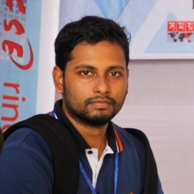 |
Md. Mahadi Hasan Nahid, Tentative topic: Tabular data reasoning |
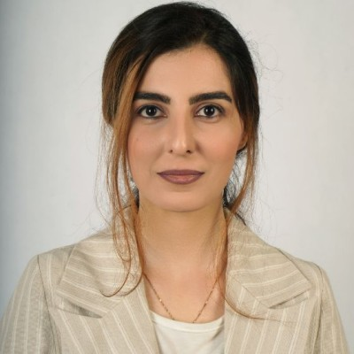 |
Sepideh Entezari Maleki , Tentative topic: Text to SQL |
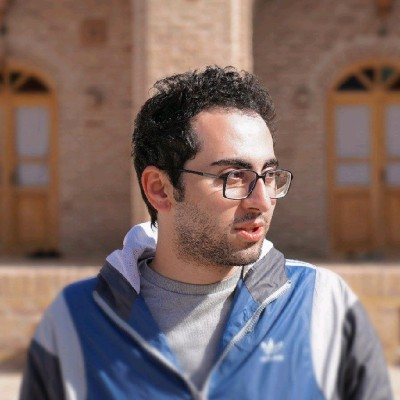 |
Soroush OmidvarTehrani , Tentative topic: Data wrangling and integration |
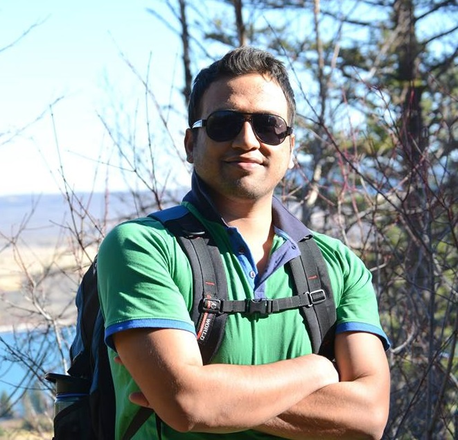 |
Mir Tafseer Nayeem , Tentative topic: User-centric modeling and synthesis of content |
Current M.Sc. Students
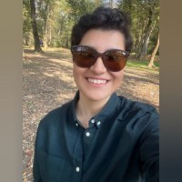 |
Setareh Babajani, Topic: Transforming tabular data |
| Mohammadreza Daviran, Topic: Text to SQL | |
| Amin Habibollah, Topic: Text to SQL (tentative) |
Current Undergrad Students
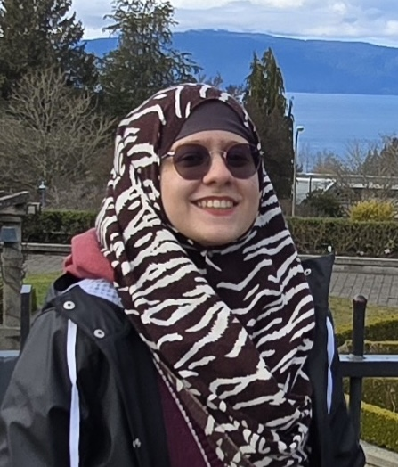 |
Laviza Nofal, Topic: Interactive Text-to-SQL |
| Yifan Zhou, Topic: Interactive Text-to-SQL | |
| Brian Lin, Topic: Text to SQL |
Former Students
|
Arash Dargahi ,
PhD 2025 : Transforming tables for heterogeneous joins: from common strings to complex mappings
First Employment: PointClickCare |
|
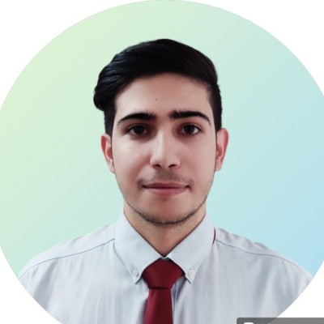 |
Mohammadjavad Ardestani,
M.Sc. 2025: LongRecall: A strcutured approach for robust recall evaluation in long-form text
First Employment: AMII |
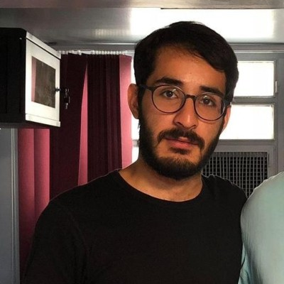 |
Behrad Khorram (co-supervised with M. Nascimento),
M.Sc. 2024: Semantic annotation of mixed-unit numeric data
First Employment: Zenbase AI |
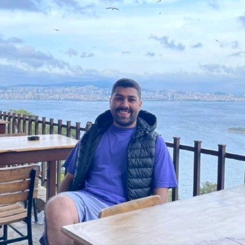 |
Amir Babamahmoudi (co-supervised with M. Nascimento),
M.Sc. 2024: Column type annotation using large language models
First Employment: Zenbase AI |
|
Md. Mahadi Hasan Nahid,
M.Sc. 2024: Improving table reasoning through table decomposition and normalization
Current: continuing as a PhD student |
|
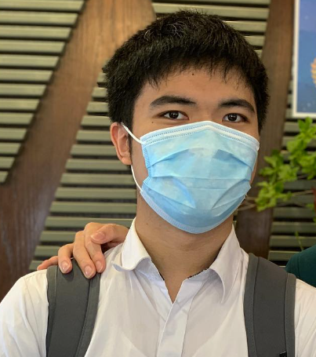 |
Tunglam (David) Lee, Undergrad summer student, 2024: A study of entity grouping
on
Current: student at UofA |
 |
Mohammadreza Pourreza,
M.Sc. 2024: Text-to-SQL systems in the era of advanced large language models (winner of the department best MSc thesis award)
First Employment: Huawei, Current: Google |
|
Mohammadreza Samadi,
M.Sc. 2023: Performance prediction for multi-hop question answering
First Employment: Huawei |
|
|
Ali Naeimabadi,
M.Sc. 2023: Product entity matching by leveraging tabular data
First Employment: Alberta Health |
|
|
Hamed Mirzaei,
M.Sc. 2023: Table search with preferences
First Employment: mmHg |
|
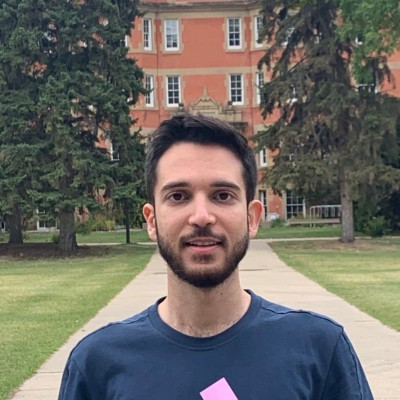 |
Mostafa Yadegari,
M.Sc. 2023: Detecting word transfer in open domain question answering
First Employment: CEIOC Holdings ltd |
|
Mehdi Akbarian,
M.Sc. 2022: Probing the robustness of pre-trained language models for structured and unstructured entity matching
First Employment: Aimsio |
|
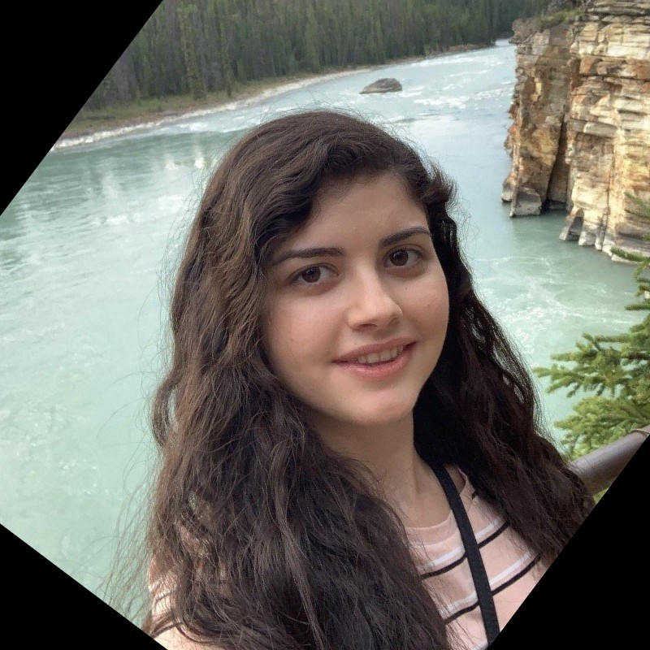 |
Shahrzad Sayehban (co-supervised with L. Mou),
M.Sc. 2022: Unsupervised syntax-based editing probabilistic sentence generation
First Employment: Amii |
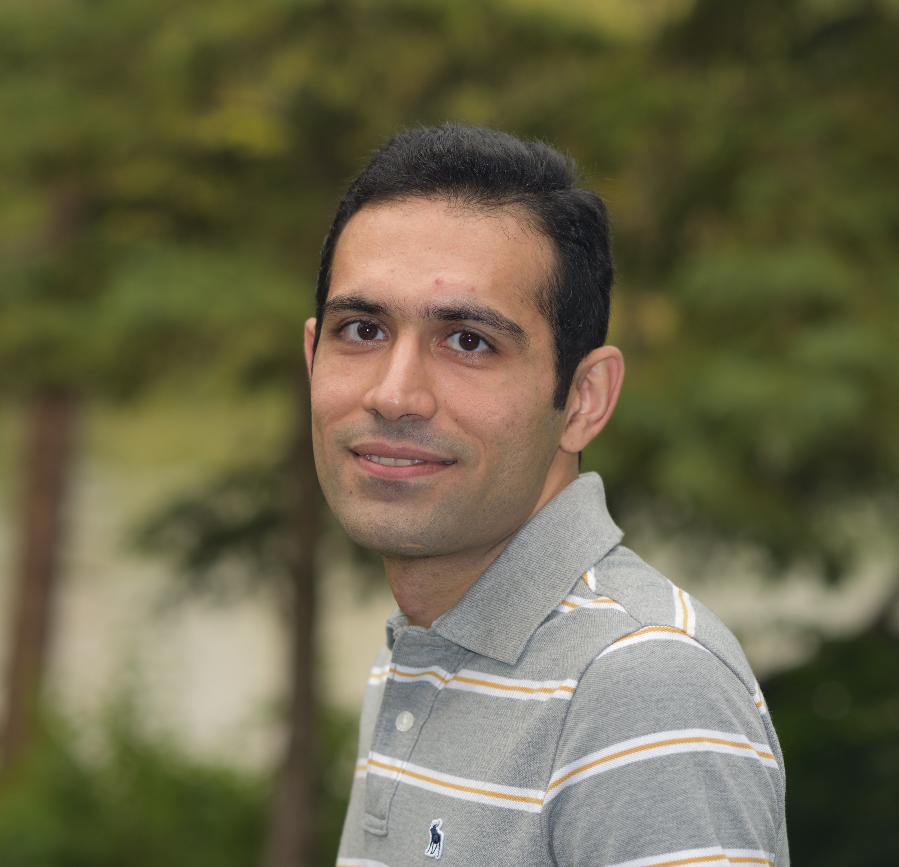 |
Ehsan Kamalloo ,
PhD 2022: Robust knowledge acquisition in answering information-seeking questions at scale First Employment: Postdoc at the University of Waterloo |
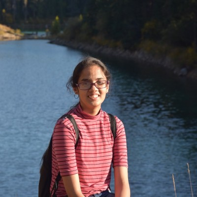 |
Maithrreye Srinivasan, M.Sc. 2021: Location-aware named entity disambiguation
First Employment: Amii |
|
Harrison Fah, Undergrad summer student, 2021: A dashboard for table search and integration
Current: student at UofA |
|
|
Jeanne Coleongco, Undergrad summer student, 2021: A benchmark for document relation extraction
Current: student at UofA |
|
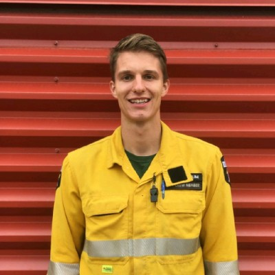 |
Jacob Deinum, Undergrad summer student, 2021: Data collection and maintenance from open data sources
Current: student at UofA |
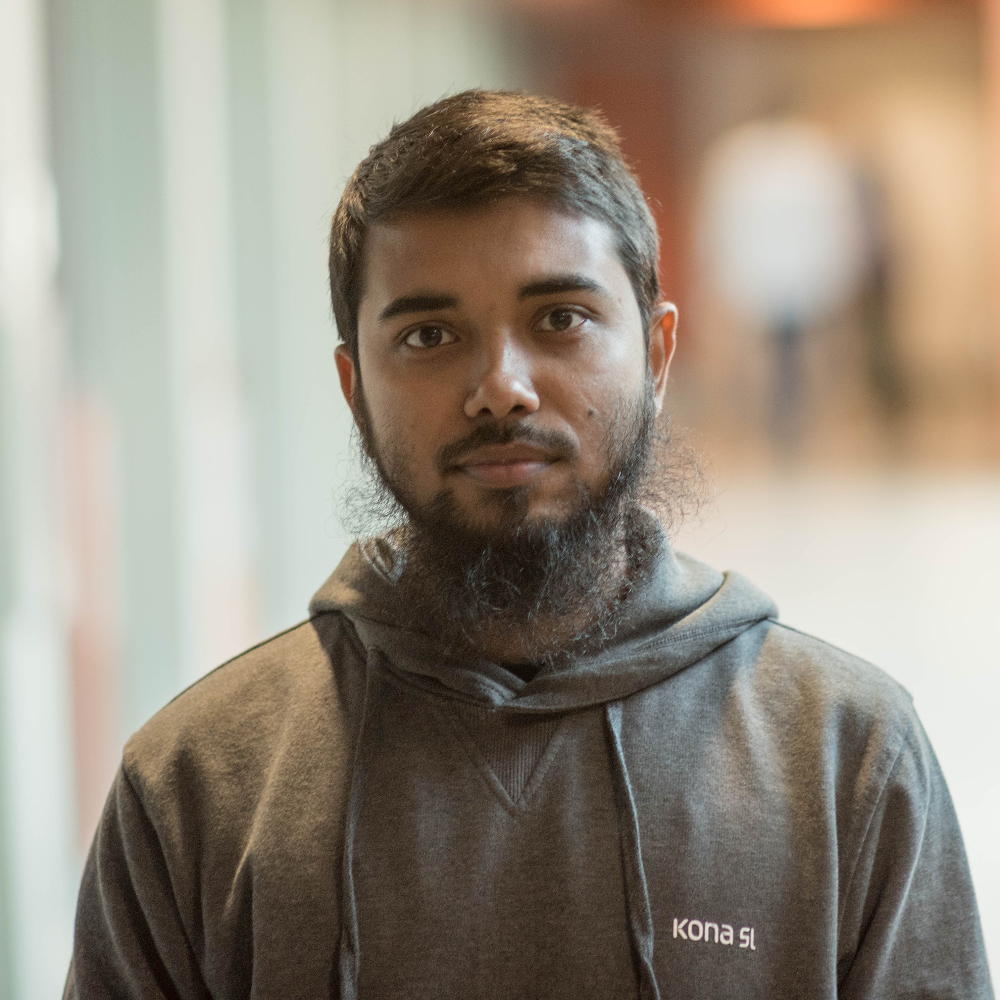 |
Arif Hasnat, M.Sc. 2021: Interactive set discovery
First Employment: Pleasant Solutions |
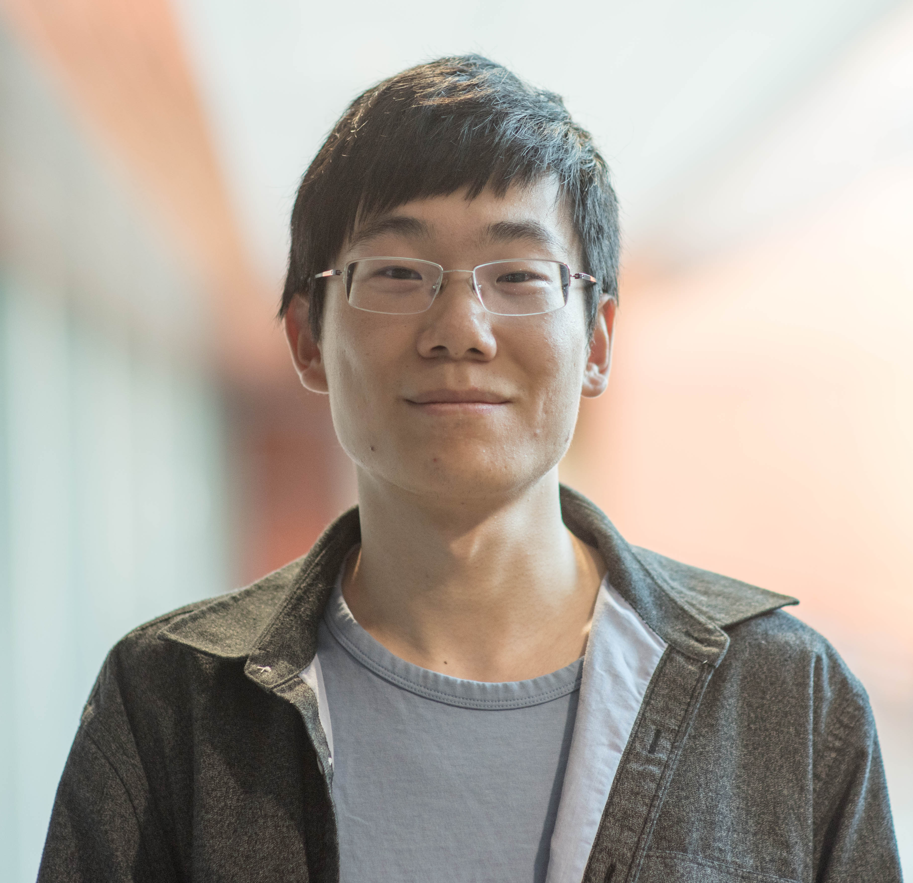 |
Yuchen (Michael) Su, M.Sc. 2021: Annotating numeric columns in web tables
First Employment: Huawei |
|
Zharkyn Kassenov (co-supervised with
J. Sander),
M.Sc. 2020: Table expansion: Populating relational web tables based on examples
First Employment: Process Street |
|
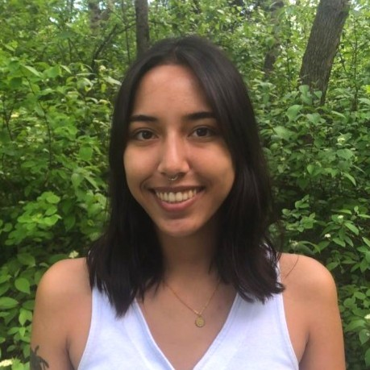 |
Michelle Aubin, Undergrad summer student, 2020: A search engine over natural language text corpora
Current: student at UofA |
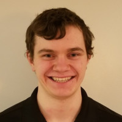 |
Paul Saunders, Undergrad summer student, 2020: A tool for querying lists and web tables
Current: student at UofA |
|
Saeed Sarabchi (co-supervised with J. Sander), M.Sc. 2019:
Extending Tables using a Web Table Corpus
First Employment: Pagnotta Industries Inc. |
|
|
Tanner Chell, Undergrad summer student, 2019:
Surveying external data sources for an enterprise
First Employment: InsideDesk |
|
 |
Nathan Vandermolen-Pater, Undergrad summer student, 2019:
Collecting and cleaning open data
Current: student at UofA |
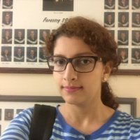 |
Sara Farazi, M.Sc. 2018:
Top-k Spatial Term Queries on Streaming Data
First Employment: Thomson Reuters Labs |
|
Thomas Lafrance, Undergrad summer student, 2018:
BareTQL: A tool for querying web tables
current: student at UofA |
|
| |
Peter Elliott, Undergrad summer student, 2018:
Extracting relationships from organizational corpora
Current: student at UofA |
|
Boris Fleysher, Undergrad summer student, 2018:
Extracting relationships from organizational corpora
First Employment: vrCAVE |
|
|
Sanket Kumar Singh, M.Sc. 2017:
Strategies for gazetteer improvement and enrichment
First Employment: NTTData |
|
|
Zhaoyang Shao, M.Sc. 2016:
Error-tolerant exempler queries on knowledge graphs
First Employment: IBM Current: Amazon |
|
| |
Neel Parikh, Undergrad summer stydent, 2016,
Project: Prototyping with a search interface over documents
Current: Student at UofA |
|
Andong Wang, M.Sc. 2015:
Annotating Web tables using surface text patterns
First Employment: SAP |
|
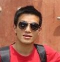 |
Kai Zhou, M.Sc. 2015:
Offline strategies for online set expansion
First Employment: Microsoft |
|
Jiangwei Yu, M.Sc. 2014:
Geotagging named entities in Web pages,
First Employment: Google |
|
|
Muhammad Waqar, M.Sc. 2014:
Characterizing users in a classified ad network,
First Employment: Microsoft |
|
|
Reza Sadoddin
(co-supervised with
J. Sander), Ph.D. 2014: Finding surprisingly frequent patterns of variable lengths in sequence data
First Employment: FICO, San Jose Current: Google |
|
|
Saeed Mohajeri (co-supervised with
O. Zaiane), M.Sc. 2013:
BubbleNet: an interactive interface for retrieving documents,
First Employment: Facebook |
|
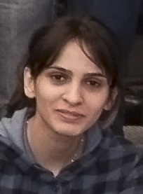 |
Afsaneh Esteki , M.Sc. 2013:
Analzing and extracting lists on the Web,
First Employment: Telus Current: Tata Consultancy Services |
| James Moore,
NSERC Undergrad Summer student, 2013, Project: Synonymy
Currently: Student at McMaster University |
|
|
Hengshuai Yao
(co-supervised with
R. Sutton), Topic: A Multistep learning approach to prediction
and ranking
First Employment: GroundTruth Current: Huawei Technology |
|
|
Aibek Makazhanov , M.Sc. 2012:
Modeling interactions in social media
First Employment: Nazarbayev University, Kazakhstan |
|
|
Chaman Thapa , M.Sc. 2012:
Non-topical classification of websites
(co-supervised with
O. Zaiane)
First Employment: DataGardens Inc |
|
| Stephen Romansky,
NSERC Undergrad Summer student, 2012, Project: Synonymy
Currently: Student at UofA |
|
| Eddie Santos,
Undergrad Summer student, 2012, Project: Synonymy
Currently: Student at UofA |
|
|
Pirooz Chubak , Ph.D. 2011:
Querying and indexing natural language text
First Employment: UBC (postdoc fellow) Current: Senior Data Engineer at Apple |
|
|
Christopher Pinchak, Ph.D. 2009:
Class-free answer typing
(co-supervised with
D. Lin)
First Employment: IMO, Palo Alto Current: Engineering Manager at Pintrest |
|
|
Yang Zhao , M.Sc. 2009:
Geometric Filter: a space and time efficient lookup table with
bounded error
(co-supervised with
M. Nascimento)
First Employment: EMC, Edmonton Current: iATS Payments, Edmonton |
|
| |
Eric Luong , NSERC Undergrad Summer Student, 2009,
Currently: Graduate student at the University of Alberta. |
|
Fan Deng , Ph.D. 2007: Approximation algorithms for
frequency related query processing on streaming data
First Employment: L3S Research Lab, Germany |
|
|
Reza Sherkat , Ph.D. 2007: Searching archival data
for historical similarities
First Employment: IBM Toronto Lab Current: SAP |
|
|
Pirooz Chubak , M.Sc. 2007: Integrating natural
language text with relational data
First Employment: continued for PhD Current: Senior Data Engineer at Apple |
|
|
Haobin Li , M.Sc. 2006: Data extraction using wild
card queries.
First Employment: Yotta Yotta Current: Senior Developer at TD |
|
| Jordan Nielson , NSERC Undergrad Summer Student, 2006,
Project: Building a query language for natural language Text
Current: Pason Systems Inc. |
|
|
Cheng Hu , M.Sc. 2005: Bulk loading a linear
hash index.
First Employment: Collaborative Learning Network Inc. |
|
|
Gabriela Moise ,
(co-supervised with
J. Sander), M.Sc. 2003: Focused cocitation:
improving the retrieval of related pages on the Web.
Current: Project Manager at EPCOR |
|
|
Stephen Curial , NSERC Undergrad Summer Student, 2003-2004,
Project:
ALVIN: A system for visualizing large networks, also
NSERC Undergrad Summer Student, 2005, Project:Automatically Repairing a Wrapper.
First Employment: Xymbiant start up Current: Software development manager at Amazon |
|
|
Eric Coulthard , NSERC Undergrad Summer Student, 2004,
Project: Searching for paths in the Web graph,
Current: Senior Programmer at Driving Force. |
|
| Qing Shi , NSERC Undergrad Summer Student, 2003,
First Employment: Department of Statistics, University of Alberta. |
|
| Andrew Lau , NSERC Undergrad Summer Student, 2002,
First Employment: IBM Toronto Lab. |